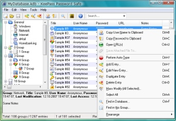

KeePass Password Safe

|
|
KeePass Password Safe |
|
KeePass: Copyright © 2003-2019 Dominik Reichl. The program is OSI Certified Open Source Software. OSI Certified is a certification mark of the Open Source Initiative. For more information see the License page.
Today you need to remember many passwords. You need a password for the Windows network logon, your e-mail account, your website's FTP password, online passwords (like website member account), etc. etc. etc. The list is endless. Also, you should use different passwords for each account. Because if you use only one password everywhere and someone gets this password you have a problem... A serious problem. He would have access to your e-mail account, website, etc. Unimaginable.
But who can remember all those passwords? Nobody, but KeePass can. KeePass is a free, open source, light-weight and easy-to-use password manager for Windows.
The program stores your passwords in a highly encrypted database. This database consists of only one file, so it can be easily transferred from one computer to another.
KeePass supports password groups, you can sort your passwords (for example into Windows, Internet, My Website, etc.). You can drag&drop passwords into other windows. The powerful auto-type feature will type user names and passwords for you into other windows. The program can export the database to various formats. It can also import data from various other formats (more than 35 different formats of other password managers, a generic CSV importer, ...).
Of course, you can also print the password list or current view. Using the context menu of the password list you can quickly copy password or user name to the Windows clipboard. Searching in password database is possible.
The program ships with a strong random password generator (you can define the possible output characters, length, generation rules, etc.).
The program features a plugin architecture. Other people can write plugins for KeePass, extending its functionality: support for even more data import/export formats, backup features, network features, etc. See the plugins page on the KeePass website for downloadable plugins and an introduction on how to write your own plugins.
And the best: it's free and you have full access to its source code!
KeePass is distributed under the GPL license. See the file 'License.txt' in the downloadable KeePass package for details.
This documentation applies to KeePass 2.x.